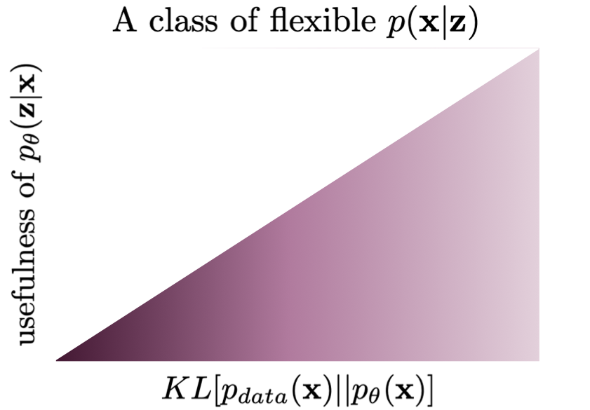

Introduction¶
The main goal of AI is to formulate and implement systems that can interact with an environment, process, store and transmit information. In other words, we wish an AI system understands the world around it by identifying and disentangling hidden factors in the observed low-sensory data (Bengio et al., 2013). If we think about the problem of building such a system, we can formulate it as learning a probabilistic model, i.e., a joint distribution over observed data, $\mathbf{x}$, and hidden factors, $\mathbf{z}$, namely, $p(\mathbf{x}, \mathbf{z})$. Then learning a useful representation is equivalent to finding a posterior distribution over the hidden factors, $p(\mathbf{z}|\mathbf{x})$. However, it is rather unclear what we really mean by useful in this context. In a beautiful blog post (Huszar, 2017), Ferenc Huszar outlines why learning a latent variable model by maximizing the likelihood function is not necessarily useful from the representation learning perspective. Here, we will use it as a good starting point for a discussion of why applying hierarchical latent variable models could be beneficial.
Let us start by defining the setup. We assume the empirical distribution $p_{data}(\mathbf{x})$ and a latent variable model $p_{\theta}(\mathbf{x}, \mathbf{z})$. The way we parameterize the latent variable model is not constrained in any manner, however, we assume that the distribution is parameterized using deep neural networks (DNNs). This is important for two reasons:
- DNNs are non-linear transformations and as such, they are flexible and allow parameterizing a wide range of distributions.
- We must remember that DNNs will not solve all problems for us! In the end, we need to think about the model as a whole, not only about the parameterization. What I mean by that is the distribution we choose and how random variables interact, etc. DNNs are definitely helpful but there are many potential pitfalls (we will discuss some of them later on) that even the largest and coolest DNN is unable to take care of.
It is worth to remember that the joint distribution could be factorized in two ways, namely:
\begin{align} p_{\theta}(\mathbf{x}, \mathbf{z}) &= p_{\theta}(\mathbf{x} | \mathbf{z}) p_{\theta}(\mathbf{z}) \\ &= p_{\theta}(\mathbf{z} | \mathbf{x}) p_{\theta}(\mathbf{x}). \end{align}Moreover, the training problem of learning $\theta$ could be defined as an unconstrained optimization problem with the following training objective:
\begin{align} KL[p_{data}(\mathbf{x}) || p_{\theta}(\mathbf{x})] &= -\mathbb{H}[p_{data}(\mathbf{x})] + \mathbb{CE}[p_{data}(\mathbf{x}) || p_{\theta}(\mathbf{x})] \\ &= const + \mathbb{CE}[p_{data}(\mathbf{x}) || p_{\theta}(\mathbf{x})], \end{align}where $p_{\theta}(\mathbf{x}) = \int p_{\theta}(\mathbf{x}, \mathbf{z})\ \mathrm{d} \mathbf{z}$, $\mathbb{H}[\cdot]$ denotes the entropy, and $\mathbb{CE}[\cdot || \cdot]$ is the cross entropy. Notice that the entropy of the empirical distribution is simply a constant since it does not contain $\theta$. The cross-entropy could be further re-written as follows:
\begin{align} \mathbb{CE}[p_{data}(\mathbf{x}) || p_{\theta}(\mathbf{x})] &= -\int p_{data}(\mathbf{x}) \ln p_{\theta}(\mathbf{x})\ \mathrm{d} \mathbf{x} \\ &= -\frac{1}{N} \sum_{n=1}^{N} \ln p_{\theta}(\mathbf{x}_{n}) . \end{align}Eventually, we have obtained the objective function we use all the time, namely, the negative log-likelihood function.
If we think of usefulness of a representation (i.e., hidden factors) $\mathbf{z}$, we intuitively think of some kind of information that is shared between $\mathbf{z}$ and $\mathbf{x}$. However, the unconstrained training problem we consider, i.e., the minimization of the negative log-likelihood function, does not necessarily say anything about the latent representation. In the end, we optimize the marginal over observable variables because we do not have access to values of latent variables. Even more, typically we do not know what these hidden factors are or should be! As a result, our latent variable model can learn to... disregard the latent variables completely. Let us look into this problem in more detail.
A potential problem with latent variable models¶
Following the discussion presented in (Huszar, 2017), we can visualize two scenarios that are pretty common in deep generative modeling with latent variables models. Before delving into that, it is beneficial to explain the general picture. We are interested in analyzing a class of latent variable models with respect to usefulness of latents and the value of the objective function $KL[p_{data}(\mathbf{x}) || p_{\theta}(\mathbf{x})]$. In Figure 1, we depict a case when all models are possible, namely, a search space where models are evaluated according to the training objective (x-axis) and usefulness (y-axis). The ideal model is the one in the top left corner that maximizes both criteria. However, it is possible to find a model that completely disregards the latents (the bottom left corner) while maximizing the fit to data. We already can see that there is a potentially huge problem! Running a (numerical) optimization procedure could give infinitely many models that are equally good wrt $KL[p_{data}(\mathbf{x}) || p_{\theta}(\mathbf{x})]$ but with completely different posteriors over latents! That puts in question the applicability of the latent variable models. However, in practice, we see that learned latent variables are useful (or, in other words, they contain information about observables). So how is it possible?
As pointed out by (Huszar, 2017), the reason for that is the inductive bias of the chosen class of models. By picking a very specific class of DNNs, we implicitly constrain the search space. First, the left-most models in Figure 1 are typically unattainable. However, using some kind of bottlenecks in our class of models potentially leads to a situation that latents must contain some information about observables. As a result, they become useful. An example of such a situation is depicted in Figure 2. After running a training algorithm, we can end in one of the two "spikes" where the training objective is the highest and the usefulness is non-zero. Still, we can achieve the same performing models at two different levels of the usefulness but at least the information flows from $\mathbf{x}$ to $\mathbf{z}$. Obviously, the considered scenario is purely hypothetical but it shows that the inductive bias of a model can greatly help to learn representations without being specified by the objective function. Please keep this thought in mind because it will play a crucial role later on!
The next situation is more tricky. Let us assume that we have a constrained class of models, however, the conditional likelihood $p(\mathbf{x}|\mathbf{z})$ is parameterized by a flexible, enormous DNN. A potential danger here is that this model could learn to completely disregard $\mathbf{z}$, treating it as a noise. As a result, $p(\mathbf{x}|\mathbf{z})$ becomes an unconditional distribution that mimics $p_{data}(\mathbf{x})$ almost perfectly. At the first glance, this scenario sounds unrealistic but it is a well-known phenomenon in the field. For instance, (Alemi et al., 2018) conducted a thorough experiment with variational auto-encoders, and taking a PixelCNN++-based decoder resulted in a VAE that was unable to reconstruct images. Their conclusion was exactly the same, namely, taking a class of models with too flexible $p(\mathbf{x}|\mathbf{z})$ could lead to the model in the bottom left corner in Figure 3.

How to define a proper class of models?¶
Alright, you are probably a bit confused about what we have discussed so far. The general picture is rather pessimistic because it seems that picking a proper class of models, i.e., a class of models that allow achieving useful latent representations, is a non-trivial task. Moreover, the whole story sounds like walking in the dark, trying out various DNNs architectures, and hoping that we obtain a meaningful representation.
Fortunately, the problem is not so horrible as it looks at the first glance. Some ideas formulate a constrained optimization problem (Phuong et al., 2018; Rezende & Viola, 2018) or add an auxiliary regularizer (Sinha & Dieng, 2021; Tomczak, 2016) to (implicitly) define usefulness of the latents. Here, we will discuss one of the possible approaches that utilize hierarchical architectures. However, it is worth remembering that the issue of learning useful representations remains an open question and is a vivid research direction.
Hierarchical models have a long history in deep generative modeling and deep learning and were advocated by many prominent researchers, e.g., (Bengio, 2009; (Salakhutdinov & Hinton, 2009; Salakhutdinov, 2015). The main hypothesis is that the concepts describing the world around us could be organized hierarchically. In the light of our discussion, if a latent variable model takes a hierarchical structure, it may introduce an inductive bias, constrain the class of models, and, eventually, force information flow between latents and observables. At least in theory. Shortly, we will see that we must be very careful with formulating stochastic dependencies in the hierarchy. In the next sections, we will focus on latent variable models with variational inference, i.e., hierarchical Variational Auto-Encoders.
A side note: One may be tempted to associate hierarchical modeling with Bayesian hierarchical modeling. These two terms are not necessarily equivalent. Bayesian hierarchical modeling is about treating (hyper)parameters as random variables and formulating distributions over (hyper)parameters (Gelman et al., 1995). Here, we do not take advantage of Bayesian modeling and consider a hierarchy among latent variables, not parameters.
Hierarchical Variational Auto-Encoders¶
Two-level VAE Let us start with a VAE with two latent variables: $\mathbf{z}_{1}$ and $\mathbf{z}_{2}$. The joint distribution could be factorized as follows:
$$ p(\mathbf{x}, \mathbf{z}_{1}, \mathbf{z}_{2}) = p(\mathbf{x} | \mathbf{z}_{1}) p(\mathbf{z}_{1} | \mathbf{z}_{2}) p(\mathbf{z}_{2}) $$and it defines a straightforward generative process: first sample $\mathbf{z}_{2}$, then sample $\mathbf{z}_{1}$ given $\mathbf{z}_{2}$, and eventually sample $\mathbf{x}$ given $\mathbf{z}_{1}$.
Since we know already that even for a single latent variable calculating posteriors over latents is intractable (except the linear Gaussian case, it is worth remembering that!), we can utilize the variational inference with a family of variational posteriors $Q(\mathbf{z}_{1}, \mathbf{z}_{2} | \mathbf{x})$. Now, the main part is how to define the variational posteriors. A rather natural approach would be to reverse the dependencies and factorize the posterior in the following fashion:
$$ Q(\mathbf{z}_{1}, \mathbf{z}_{2} | \mathbf{x}) = q(\mathbf{z}_{1} | \mathbf{x}) q(\mathbf{z}_{2} | \mathbf{z}_{1}, \mathbf{x}) $$or even we can simplify it as follows (dropping the dependency on $\mathbf{x}$ for the second latent variable):
$$ Q(\mathbf{z}_{1}, \mathbf{z}_{2} | \mathbf{x}) = q(\mathbf{z}_{1} | \mathbf{x}) q(\mathbf{z}_{2} | \mathbf{z}_{1}). $$If we take the continuous latents, we can use the Gaussians distributions: \begin{align} p(\mathbf{z}_{1} | \mathbf{z}_{2}) &= \mathcal{N}(\mathbf{z}_{1} | \mu(\mathbf{z}_{2}), \sigma^2(\mathbf{z}_{2})) \\ p(\mathbf{z}_{2}) &= \mathcal{N}(\mathbf{z}_{2} | 0, 1)\\ q(\mathbf{z}_{1} | \mathbf{x}) &= \mathcal{N}(\mathbf{z}_{1} | \mu(\mathbf{x}), \sigma^2(\mathbf{x}))\\ q(\mathbf{z}_{2} | \mathbf{z}_{1}) &= \mathcal{N}(\mathbf{z}_{2} | \mu(\mathbf{z}_{1}), \sigma^2(\mathbf{z}_{1})) \end{align}
where $\mu_i(\mathbf{v})$ means that a mean parameter is parameterized by a neural network that takes a random variable $\mathbf{v}$ as input, analogously we parameterize variances (i.e., diagonal covariance matrices). As we can see, this is a straightforward extension of a VAE we discussed before.
The two-level VAE is depicted in Figure 4. Notice how the stochastic dependencies are defined, namely, there is always a dependency on a single random variable.
| Generative part | Variational part |
|---|---|
A potential pitfall Alright, so are we done? Do we have a better class of VAEs? Unfortunately, the answer is NO. We noticed that this two-level version of a VAE is a rather straightforward extension of a one-level VAE. Thus, our discussion about potential problems with latent variable models holds true. We get even get an extra insight if we look into the ELBO for the two-level VAE (if you do not remember how to derive the ELBO, please go back to the post on VAEs first):
$$ ELBO(\mathbf{x}) = \mathbb{E}_{Q(\mathbf{z}_1, \mathbf{z}_2 | \mathbf{x})}\Big{[} \ln p(\mathbf{x} | \mathbf{z}_1) - KL[q(\mathbf{z}_1 | \mathbf{x}) || p(\mathbf{z}_1 | \mathbf{z}_2)] - KL[q(\mathbf{z}_2 | \mathbf{z}_1) || p(\mathbf{z}_2)] \Big{]} . $$To shed some light on this ELBO:
- All conditions ($\mathbf{z}_1, \mathbf{z}_{2}, \mathbf{x}$) are either samples from $Q(\mathbf{z}_1, \mathbf{z}_2 | \mathbf{x})$ or $p_{data}(\mathbf{x})$.
- We obtain the Kullback-Leibler divergence terms by looking at the variables per layer. You are encouraged to derive the ELBO step-by-step, it is a great exercise to get familiar with the variational inference.
- It is worth remembering that the Kullback-Leibler divergence is always non-negative.
Theoretically, everything should work perfectly fine but there are a couple of potential problems. First, we initialize all DNNs that parameterize the distributions randomly. As a result, all Gaussians are basically standard Gaussians. Second, if the decoder is powerful and flexible, there is a huge danger that the model will try take advantage of the optimum for the last KL-term, $KL[q(\mathbf{z}_2 | \mathbf{z}_1) || p(\mathbf{z}_2)] \Big{]}$, that is $q(\mathbf{z}_2 | \mathbf{z}_1) \approx p(\mathbf{z}_2) \approx \mathcal{N}(0, 1)$. Then, since $q(\mathbf{z}_2 | \mathbf{z}_1) \approx \mathcal{N}(0, 1)$, the second layer is not used at all (it is a Gaussian noise) and we get back to the same issues as in the one-level VAE architecture. It turns out that learning the two-level VAE is even more problematic than a VAE with a single latents because even for a relatively simple decoder the second latent variables $\mathbf{z}_2$ is mostly unused (Burda et al., 2015; Maaloe et al., 2017). This effect is called the posterior collapse.
Top-down VAEs A take-away from our considerations in the two-level VAE is that adding an extra level does not necessarily provide anything comparing to the one-level VAE. However, so far we have considered only one class of variational posteriors, namely:
$$ Q(\mathbf{z}_{1}, \mathbf{z}_{2} | \mathbf{x}) = q(\mathbf{z}_{1} | \mathbf{x}) q(\mathbf{z}_{2} | \mathbf{z}_{1}). $$A natural question is whether we can do better. You can already guess the answer but before shouting it out loud, let us think for a second. In the generative part, we have top-down dependencies, going from the highest level of abstraction (latents) down to the observable variables. Let us repeat it here again:
$$ p(\mathbf{x}, \mathbf{z}_{1}, \mathbf{z}_{2}) = p(\mathbf{x} | \mathbf{z}_{1}) p(\mathbf{z}_{1} | \mathbf{z}_{2}) p(\mathbf{z}_{2}) $$Perhaps, we can mirror such dependencies in the variational posteriors as well. Then we get the following:
$$ Q(\mathbf{z}_{1}, \mathbf{z}_{2} | \mathbf{x}) = q(\mathbf{z}_{1} | \mathbf{z}_{2}, \mathbf{x}) q(\mathbf{z}_{2} | \mathbf{x}) . $$Do you see any resemblance? Yes, the variational posteriors have the extra $\mathbf{x}$ but the dependencies are pointing in the same direction. Why this could be beneficial? Because now we could have a shared top-down path that would make the variational posteriors and the generative part tightly connected through a shared parameterization. That could be a very useful inductive bias!
This idea was originally proposed in ResNet VAEs (Kingma et al., 2016) and Ladder VAEs (Sonderby et al., 2016), and it was further developed in BIVA (Maaloe et al., 2019), NVAE (Vahdat & Kautz, 2020), and the very deep VAE (Child, 2021). These approaches differ in their implementations and parameterizations used (i.e., architectures of DNNs), however, they all could be categorized as instantiations of top-down VAEs. The main idea, as mentioned before, is to share the top-down path between the variational posteriors and the generative distributions, and use a side, deterministic path going from $\mathbf{x}$ to the last latents. Alright, let us write this idea down.
First, we have the top-down path that defines $p(\mathbf{x} | \mathbf{z}_{1})$, $p(\mathbf{z}_{1} | \mathbf{z}_{2})$ and $p(\mathbf{z}_{2})$. Thus, we need a DNN that outputs $\mu_1$ and $\sigma_1^2$ for given $\mathbf{z}_{2}$, and another DNN that outputs the parameters of $p(\mathbf{x} | \mathbf{z}_{1})$ for given $\mathbf{z}_{1}$. Since $p(\mathbf{z}_{2})$ is an unconditional distribution (e.g., the standard Gaussian), we do not need a separate DNN here.
Second, we have a side, deterministic path that gives two deterministic variables: $\mathbf{r}_1 = f_1(\mathbf{x})$ and $\mathbf{r}_2 = f_2(\mathbf{r}_1)$. Both transformations, $f_1$ and $f_2$, are DNNs. Then, we can use additional DNNs that return some modifications of the means and the variances, namely, $\Delta \mu_1, \Delta \sigma_1^2$ and $\Delta \mu_2, \Delta \sigma_2^2$. These modifications could be defined in many ways, here we follow the way it is done in NVAE (Vahdat & Kautz, 2020) that are relative location and scales of the values given in the top-down path. If you do not fully follow this idea, it should be clear once we define the variational posteriors.
Finally, we can define the whole procedure. We define various neural networks by specifying different indices. For sampling, we use the top-down path:
- $\mathbf{z}_2 \sim \mathcal{N}(0, 1)$
- $[\mu_1, \sigma_1^2] = NN_1(\mathbf{z}_2)$
- $\mathbf{z}_1 \sim \mathcal{N}(\mu_1, \sigma_1^2)$
- $\vartheta = NN_x(\mathbf{z}_1)$
- $\mathbf{x} \sim p_{\vartheta}(\mathbf{x}|\mathbf{z}_1)$
Now (please focus!) we calculate samples from the variational posteriors as follows:
- (Bottom-up deterministic path) $\mathbf{r}_1 = f_1(\mathbf{x})$ and $\mathbf{r}_2 = f_2(\mathbf{r}_1)$
- $[\Delta \mu_1, \Delta \sigma_1^2] = NN_{\Delta 1}(r_1)$
- $[\Delta \mu_2, \Delta \sigma_2^2] = NN_{\Delta 2}(r_2)$
- $\mathbf{z}_2 \sim \mathcal{N}(0 + \Delta \mu_2, 1 \cdot \Delta \sigma_2^2)$
- $[\mu_1, \sigma_1^2] = NN_1(\mathbf{z}_2)$
- $\mathbf{z}_1 \sim \mathcal{N}(\mu_1 + \Delta \mu_1, \sigma_1^2 \cdot \Delta \sigma_1^2)$
and the reconstruction:
- $\vartheta = NN_x(\mathbf{z}_1)$
- $\mathbf{x} \sim p_{\vartheta}(\mathbf{x}|\mathbf{z}_1)$
These operations are schematically presented in Figure 5.
Please note that the deterministic bottom-up path modifies parameters of the top-down path. As advocated by (Vahdat & Kautz, 2020), this idea is especially useful because "when the prior moves, the approximate posterior moves accordingly, if not changed". Moreover, as noted in (Vahdat & Kautz, 2020), the Kullaback Leibler between two Gaussians simplifies as follows (we remove some additional dependencies for clarity):
$$ KL\left(q\left(z^{i} \mid \boldsymbol{x}\right) \| p\left(z^{i}\right)\right)=\frac{1}{2}\left(\frac{\Delta \mu_{i}^{2}}{\sigma_{i}^{2}}+\Delta \sigma_{i}^{2}-\log \Delta \sigma_{i}^{2}-1\right) $$Eventually, we implicitly force a close connection between the variational posteriors and the generative part. This inductive bias helps to encode information about the observables in the latents. Moreover, there is no need to use overly flexible decoders since the latents take care of distilling the essence from data. I know, it is still a bit hand-wavy since we do not define the magical usefulness but I hope you get the picture. The top-down VAEs entangle the variational posteriors and the generative path and, as a result, the Kullback-Leibler terms will not collapse (i.e, they will be greater than zero). Empirical studies strongly back up this hypothesis (Child, 2021; Maaloe et al., 2019; Sonderby et al., 2016 Vahdat & Kautz, 2020).
Implementing own top-down VAE¶
Let us delve into an implementation of a top-down VAE. We stick to the two-level VAE to match the description provided above. We will use precisely the same steps as in the procedures used above. For clarity, we will use a single class to the code as similar to the mathematical expressions above as possible. We use the reparameterization trick for sampling. There is one difference between the math and the code, namely, in the code we use $\log \Delta \sigma$ instead of $\Delta sigma$. Then, we use $\log \sigma + \log \Delta \sigma$ instead of $ \sigma \cdot \Delta \sigma$ because $e^{\log a + \log b} = e^{\log a} \cdot e^{\log b} = a \cdot b$.
The full code could be found [here].
class HierarchicalVAE(nn.Module):
def __init__(self, nn_r_1, nn_r_2, nn_delta_1, nn_delta_2, nn_z_1, nn_x, num_vals=256, D=64, L=16, likelihood_type='categorical'):
super(HierarchicalVAE, self).__init__()
print('Hierachical VAE by JT.')
# bottom-up path
self.nn_r_1 = nn_r_1
self.nn_r_2 = nn_r_2
self.nn_delta_1 = nn_delta_1
self.nn_delta_2 = nn_delta_2
# top-down path
self.nn_z_1 = nn_z_1
self.nn_x = nn_x
# other params
self.D = D # dim of inputs
self.L = L # dim of the second latent layer
self.num_vals = num_vals # num of values per pixel
self.likelihood_type = likelihood_type # the conditional likelihood type (categorical/bernoulli)
# If you don't remember the reparameterization trick, please go back to the post on VAEs.
def reparameterization(self, mu, log_var):
std = torch.exp(0.5*log_var)
eps = torch.randn_like(std)
return mu + std * eps
def forward(self, x, reduction='avg'):
#=====
# First, we need to calculate the bottom-up deterministic path.
# Here we use a small trick to keep the delta of variance constained, namely, we applpy the hard-tanh nonlinearity.
# bottom-up
# step 1
r_1 = self.nn_r_1(x)
r_2 = self.nn_r_2(r_1)
#step 2
delta_1 = self.nn_delta_1(r_1)
delta_mu_1, delta_log_var_1 = torch.chunk(delta_1, 2, dim=1)
delta_log_var_1 = F.hardtanh(delta_log_var_1, -7., 2.)
# step 3
delta_2 = self.nn_delta_2(r_2)
delta_mu_2, delta_log_var_2 = torch.chunk(delta_2, 2, dim=1)
delta_log_var_2 = F.hardtanh(delta_log_var_2, -7., 2.)
# Next, we can do the top-down path.
# top-down
# step 4
z_2 = self.reparameterization(delta_mu_2, delta_log_var_2)
# step 5
h_1 = self.nn_z_1(z_2)
mu_1, log_var_1 = torch.chunk(h_1, 2, dim=1)
# step 6
z_1 = self.reparameterization(mu_1 + delta_mu_1, log_var_1 + delta_log_var_1)
# step 7
h_d = self.nn_x(z_1)
if self.likelihood_type == 'categorical':
b = h_d.shape[0]
d = h_d.shape[1]//self.num_vals
h_d = h_d.view(b, d, self.num_vals)
mu_d = torch.softmax(h_d, 2)
elif self.likelihood_type == 'bernoulli':
mu_d = torch.sigmoid(h_d)
#=====ELBO
# RE
if self.likelihood_type == 'categorical':
RE = log_categorical(x, mu_d, num_classes=self.num_vals, reduction='sum', dim=-1).sum(-1)
elif self.likelihood_type == 'bernoulli':
RE = log_bernoulli(x, mu_d, reduction='sum', dim=-1)
# KL
# For the Kullback-Leibler part, we need calculate two divergences:
# 1) KL[q(z_2|z) || p(z_2)] where p(z_2) = N(0,1)
# 2) KL[q(z_1|z_2, x) || p(z_1|z_2)]
# Note: We use the analytical of the KL between two Gaussians here. If you use a different distribution,
# please pay attention! You would need to use a different expression here.
KL_z_2 = 0.5 * (delta_mu_2**2 + torch.exp(delta_log_var_2) - delta_log_var_2 - 1).sum(-1)
KL_z_1 = 0.5 * (delta_mu_1**2 / torch.exp(log_var_1) + torch.exp(delta_log_var_1) -\
delta_log_var_1 - 1).sum(-1)
KL = KL_z_1 + KL_z_2
# Final ELBO
if reduction == 'sum':
loss = -(RE - KL).sum()
else:
loss = -(RE - KL).mean()
return loss
# Sampling is the top-down path but without calculating delta mean and delta variance.
def sample(self, batch_size=64):
# step 1
z_2 = torch.randn(batch_size, self.L)
# step 2
h_1 = self.nn_z_1(z_2)
mu_1, log_var_1 = torch.chunk(h_1, 2, dim=1)
# step 3
z_1 = self.reparameterization(mu_1, log_var_1)
# step 4
h_d = self.nn_x(z_1)
if self.likelihood_type == 'categorical':
b = batch_size
d = h_d.shape[1]//self.num_vals
h_d = h_d.view(b, d, self.num_vals)
mu_d = torch.softmax(h_d, 2)
# step 5
p = mu_d.view(-1, self.num_vals)
x_new = torch.multinomial(p, num_samples=1).view(b, d)
elif self.likelihood_type == 'bernoulli':
mu_d = torch.sigmoid(h_d)
# step 5
x_new = torch.bernoulli(mu_d)
return x_new
Examples of results Perfect, we are done with coding! Once you run this code, you could expect something like in Figure 6. We trained a top-down VAE with MLPs and 8 and 16 latents at the first and the second level, respectively.
A B C
Further reading¶
What we have discussed here is just touching upon the topic. Hierarchical models in probabilistic modeling seem to be important research direction and modeling paradigm. Moreover, the technical details are also crucial for achieving state-of-the-art performance. I strongly suggest reading about NVAE (Vahdat & Kautz, 2020), ResNet VAE (Kingma et al., 2016), Ladder VAE (Sonderby et al., 2016), BIVA (Maaloe et al., 2019), and very deep VAEs (Child, 2021), and compare various tricks and parameterizations used therein. These models share the same idea but implementations vary significantly.
The research on hierarchical generative modeling is very up-to-date and develops very quickly. As a result, this is nearly impossible to mention even a fraction of interesting papers. I will mention only a few worth noticing papers:
- (Pervez & Gavves, 2021) provides an insightful analysis about a potential problem with hierarchical VAEs, namely, the KL divergence term is closely related to the harmonics of the parameterizing function. In other words, using DNNs results in high-frequency components of the KL term and, eventually, to the posterior collapse. The authors propose to smooth the VAE by applying Ornstein-Uhlenbeck (OU) Semigroup. I refer to the original paper for details.
- (Wu et al., 2021) proposes greedy layer-wise learning of a hierarchical VAE. The authors used this idea in the context of video prediction, so their approach could be also motivated by computational constrained. However, the idea of greedy layer-wise training has been extensively utilized in the past (Bengio, 2009; Salakhutdinov, 2015 Salakhutdinov & Hinton, 2009).
- (Gatopoulos & Tomczak, 2021) discusses incorporating pre-defined transformations like downscaling into the model. The idea is to learn a reversed transformation to, e.g., downscaling in a stochastic manner. The resulting VAE has a set of auxiliary variables (e.g, downscaled versions of observables) a set of latent variables that encode missing information in the auxiliary variables. The hypothesis in such an approach is that learning a distribution over smaller or already processed observable variables is easier and, thus, we can decompose the problem into multiple problems of learning simpler distributions. A diagram for this approach is presented in Figure 7.

The beauty of the latent-variable modeling paradigm is that we can play with stochastic relationships among objects and, eventually, formulate a useful representation of data. As we will see in the next blog posts, there are other interesting classes of models that take advantage of diffusion models and energy functions.
References¶
(Alemi et al., 2018) Alemi, A., Poole, B., Fischer, I., Dillon, J., Saurous, R. A., Murphy, K. (2018, July). Fixing a broken ELBO. In International Conference on Machine Learning (pp. 159-168). PMLR.
(Bengio, 2009) Bengio, Y. (2009). Learning deep architectures for AI. Now Publishers Inc.
(Bengio et al., 2013) Bengio, Y., Courville, A., Vincent, P. (2013). Representation learning: A review and new perspectives. IEEE transactions on pattern analysis and machine intelligence, 35(8), 1798-1828.
(Burda et al., 2015) Burda, Y., Grosse, R., Salakhutdinov, R. (2015). Importance weighted autoencoders. arXiv preprint arXiv:1509.00519.
(Child, 2021) Child, R. (2021). Very Deep VAEs Generalize Autoregressive Models and Can Outperform Them on Images. In International Conference on Learning Representations 2021.
(Gatopoulos & Tomczak, 2021) Gatopoulos, I., & Tomczak, J. M. (2021). Self-Supervised Variational Auto-Encoders. Entropy, 23(6), 747.
(Gelman et al., 1995) Gelman, A., Carlin, J. B., Stern, H. S., Rubin, D. B. (1995). Bayesian data analysis. Chapman and Hall/CRC.
(Huszar, 2017) Huszar, F. (2017). Is maximum likelihood useful for representation learning?. URL: https://www.inference.vc/maximum-likelihood-for-representation-learning-2/ (Accessed: August 16, 2021)
(Kingma et al., 2016) Kingma, D. P., Salimans, T., Jozefowicz, R., Chen, X., Sutskever, I., & Welling, M. (2016). Improved variational inference with inverse autoregressive flow. Advances in neural information processing systems, 29, 4743-4751.
(Maaloe et al., 2017) Maaloe, L., Fraccaro, M., Winther, O. (2017). Semi-supervised generation with cluster-aware generative models. arXiv preprint arXiv:1704.00637.
(Maaloe et al., 2019) Maaloe, L., Fraccaro, M., Lievin, V., Winther, O. (2019). BIVA: A Very Deep Hierarchy of Latent Variables for Generative Modeling. Advances in Neural Information Processing Systems, 32, 6551-6562.
(Pervez & Gavves, 2021) Pervez, A., Gavves, E. (2021). Spectral Smoothing Unveils Phase Transitions in Hierarchical Variational Autoencoders. In International Conference on Machine Learning (pp. 8536-8545). PMLR.
(Phuong et al., 2018) Phuong, M., Welling, M., Kushman, N., Tomioka, R., Nowozin, S. (2018). The mutual autoencoder: Controlling information in latent code representations. URL: https://openreview.net/pdf?id=HkbmWqxCZ (Accessed: August 16, 2021)
(Rezende & Viola, 2018) Rezende, D. J., Viola, F. (2018). Taming VAEs. arXiv preprint arXiv:1810.00597.
(Salakhutdinov, 2015) Salakhutdinov, R. (2015). Learning deep generative models. Annual Review of Statistics and Its Application, 2, 361-385.
(Salakhutdinov & Hinton, 2009) Salakhutdinov, R., Hinton, G. (2009, April). Deep boltzmann machines. In Artificial intelligence and statistics (pp. 448-455). PMLR.
(Sinha & Dieng, 2021) Sinha, S., Dieng, A. B. (2021). Consistency Regularization for Variational Auto-Encoders. arXiv preprint arXiv:2105.14859.
(Sonderby et al., 2016) Sonderby, C. K., Raiko, T., Maaloe, L., Sonderby, S. K., Winther, O. (2016). Ladder Variational Autoencoders. Advances in Neural Information Processing Systems, 29, 3738-3746.
(Tomczak, 2016) Tomczak, J. M. (2016). Learning informative features from Restricted Boltzmann Machines. Neural Processing Letters, 44(3), 735-750.
(Vahdat & Kautz, 2020) Vahdat, A., Kautz, J. (2020). NVAE: A deep hierarchical variational autoencoder. Advances in Neural Information Processing Systems 33, pp. 19667-19679
(Wu et al., 2021) Wu, B., Nair, S., Martin-Martin, R., Fei-Fei, L., Finn, C. (2021). Greedy Hierarchical Variational Autoencoders for Large-Scale Video Prediction. In Proceedings of the IEEE/CVF Conference on Computer Vision and Pattern Recognition (pp. 2318-2328).